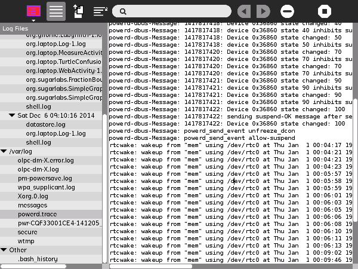
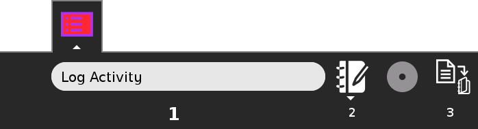

Log¶
About¶
The Log Activity allows you to troubleshoot problems with your computer. You can view the log files of Sugar and your Activities. Log files contain errors, warnings and debugging information to help you fix problems.
Where to get Log¶
Log activity is available for download from the Sugar Activity Library: Log
The source code is available on GitHub.
Using Log¶

When you open Log, there are 2 panels. On the left is a list of log files. On the right, the contents of the selected file is displayed.
The list of log files is divided into sections, each representing a folder. Pressing the arrow icon by the folder name will hide or show the log files inside. Pressing, or selecting, a log file will display the contents in the right panel.
There are 3 main folders in the log file list. The first is the .sugar or
dotsugar folder. This contains the log files of Sugar and your Activities.
The sub-folders contain backups of older logs (log files in .sugar are
deleted on shutdown). The second main folder /var/log. This contains
system log files. These are helpful for troubleshooting issues related to your
computer hardware. The last main folder is Other, and contains
miscellaneous log files.
The .sugar folder is the first folder you should look at when
troubleshooting Sugar and your Activities. The shell.log file contains
errors, warnings and debugging information for the Sugar Shell. The Sugar
Shell covers the home and neighborhood views, journal, frame, web services and
control panel. Each activity has its own log file, named using its bundle ID.
You can find an activity’s bundle ID by opening view source while using the
activity, clicking the activity folder and opening the activity.info
file. If you open an activity for a 2nd time, a separate log file will be
created, with -2 added to the end of the file name. This pattern continues
if you run the activity more than 2 times.
The Toolbars¶
Activity Toolbar
Hide/Show the list of files
Copy the log file
Enable/Disable word wrap. When word wrap is disabled, there is a horizontal scroll bar. When word wrap is enabled, the lines of text too long to fit on the screen are broken up.
Find and highlight text in the log file
Previous matching text
Next matching text
Delete current log file
Stop activity

Activity Name
Activity Description
Save log files to Journal. This packages the log files in a format that you can send over the internet. If you find a bug, you can email this package to the activity’s developers so they can fix this bug. If you are filing a support ticket or bug report, you should attach this file, so the problem can be more easily diagnosed and fixed.
Where to report problems¶
Please report bugs and make feature requests at log-activity/issues.